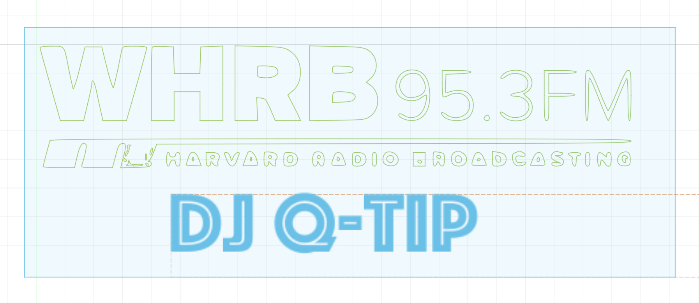
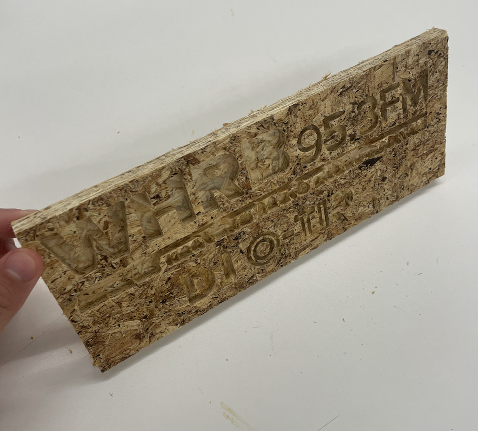

/week 8: cnc milling
# designing and milling
# ---------------------------------
For my CNC assignment, I designed and milled a plaque for myself. It was an award for the "Most Modest Person." It wasn't, but that would've been hilariously ironic. Almost as hilariously ironic as me CNC milling an award for the "Most On Top of Their Work PS70 Student." Perhaps that last one is too on the nose seeing as this was the first week I did a show-and-tell to the class.
I just designed a simple placard in Fusion360 that has the WHRB (Harvard Radio Broadcasting) logo and my DJ name (DJ Q-Tip). I founded the WHRB logo online, then used a free online .png to SVG converter to import it into Fusion360. Then, I just added text for the "DJ Q-Tip" bit.

There was a bit of touching up I had to do on the CNC computer since the SVG converter was shoddy and probably gave my laptop a bunch of viruses. Anyway, here was the result!

For some reason, I decided to mill this in OSB instead of plywood. I guess I wanted to be a hero and use up some of the OSB that's been sitting around.